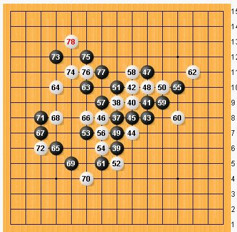

纯脑十番棋----梧桐风（假先）VS隐藏菜系【三】----结果：（隐藏菜系 执白 3胜）
#1 <font color="red">纯脑十番棋----梧桐风（假先）VS隐藏菜系【三】----结果：（隐藏菜系 执白 3胜）</font> 作者：梧桐风 发表时间：2011-8-2 19:46:53
规则：RIF规则
用时：步时72小时，局时480小时，2011-8-3-12：00开始计时
［此帖子已被 罔两 在 2011-8-20 3:55:08 编辑过］
#2 Re:纯脑十番棋----梧桐风（假先）VS隐藏菜系【三】 作者：梧桐风 发表时间：2011-8-2 21:22:35
=======上图对应的爱五子棋谱代码如下，以便你拆解：========
h8h9h6
======================================================
#3 Re:纯脑十番棋----梧桐风（假先）VS隐藏菜系【三】 作者：隐藏菜系 发表时间：2011-8-3 14:06:25
=======上图对应的爱五子棋谱代码如下，以便你拆解：========
h8h9h6i9
======================================================
#4 Re:纯脑十番棋----梧桐风（假先）VS隐藏菜系【三】 作者：梧桐风 发表时间：2011-8-3 19:12:22
=======上图对应的爱五子棋谱代码如下，以便你拆解：========
h8h9h6i9j9a1g9
======================================================
#5 Re:纯脑十番棋----梧桐风（假先）VS隐藏菜系【三】 作者：隐藏菜系 发表时间：2011-8-3 20:02:45
=======上图对应的爱五子棋谱代码如下，以便你拆解：========
h8h9h6i9j9i10
======================================================
#6 Re:纯脑十番棋----梧桐风（假先）VS隐藏菜系【三】 作者：梧桐风 发表时间：2011-8-3 20:46:46
=======上图对应的爱五子棋谱代码如下，以便你拆解：========
h8h9h6i9j9i10j8
======================================================不知道定式怎么走，拼了鸟~
#7 Re:纯脑十番棋----梧桐风（假先）VS隐藏菜系【三】 作者：隐藏菜系 发表时间：2011-8-4 20:10:03
=======上图对应的爱五子棋谱代码如下，以便你拆解：========
h8h9h6i9j9i10j8i7
======================================================
#8 Re:纯脑十番棋----梧桐风（假先）VS隐藏菜系【三】 作者：梧桐风 发表时间：2011-8-5 18:52:20
=======上图对应的爱五子棋谱代码如下，以便你拆解：========
h8h9h6i9j9i10j8i7i8
======================================================
#9 Re:纯脑十番棋----梧桐风（假先）VS隐藏菜系【三】 作者：隐藏菜系 发表时间：2011-8-5 19:08:34
=======上图对应的爱五子棋谱代码如下，以便你拆解：========
h8h9h6i9j9i10j8i7i8g8
======================================================
#10 Re:纯脑十番棋----梧桐风（假先）VS隐藏菜系【三】 作者：梧桐风 发表时间：2011-8-5 19:55:34
=======上图对应的爱五子棋谱代码如下，以便你拆解：========
h8h9h6i9j9i10j8i7i8g8j11
======================================================
#11 Re:纯脑十番棋----梧桐风（假先）VS隐藏菜系【三】 作者：隐藏菜系 发表时间：2011-8-5 19:59:33
=======上图对应的爱五子棋谱代码如下，以便你拆解：========
h8h9h6i9j9i10j8i7i8g8j11j10
======================================================
#12 Re:纯脑十番棋----梧桐风（假先）VS隐藏菜系【三】 作者：梧桐风 发表时间：2011-8-5 20:13:30
=======上图对应的爱五子棋谱代码如下，以便你拆解：========
h8h9h6i9j9i10j8i7i8g8j11j10h7
======================================================
#13 Re:纯脑十番棋----梧桐风（假先）VS隐藏菜系【三】 作者：隐藏菜系 发表时间：2011-8-5 20:30:28
=======上图对应的爱五子棋谱代码如下，以便你拆解：========
h8h9h6i9j9i10j8i7i8g8j11j10h7k10
======================================================
#14 Re:纯脑十番棋----梧桐风（假先）VS隐藏菜系【三】 作者：梧桐风 发表时间：2011-8-5 20:45:51
=======上图对应的爱五子棋谱代码如下，以便你拆解：========
h8h9h6i9j9i10j8i7i8g8j11j10h7k10h10
======================================================
#15 Re:纯脑十番棋----梧桐风（假先）VS隐藏菜系【三】 作者：隐藏菜系 发表时间：2011-8-5 21:18:59
=======上图对应的爱五子棋谱代码如下，以便你拆解：========
h8h9h6i9j9i10j8i7i8g8j11j10h7k10h10h5
======================================================
#16 Re:纯脑十番棋----梧桐风（假先）VS隐藏菜系【三】 作者：梧桐风 发表时间：2011-8-6 21:20:52
=======上图对应的爱五子棋谱代码如下，以便你拆解：========
h8h9h6i9j9i10j8i7i8g8j11j10h7k10h10h5f7
======================================================
#17 Re:纯脑十番棋----梧桐风（假先）VS隐藏菜系【三】 作者：隐藏菜系 发表时间：2011-8-6 21:23:04
=======上图对应的爱五子棋谱代码如下，以便你拆解：========
h8h9h6i9j9i10j8i7i8g8j11j10h7k10h10h5f7g6
======================================================
#18 Re:纯脑十番棋----梧桐风（假先）VS隐藏菜系【三】 作者：梧桐风 发表时间：2011-8-6 21:27:44
 此乃吾扰兵之计，择日再战
此乃吾扰兵之计，择日再战
#19 Re:纯脑十番棋----梧桐风（假先）VS隐藏菜系【三】 作者：隐藏菜系 发表时间：2011-8-6 21:55:51

#20 Re:纯脑十番棋----梧桐风（假先）VS隐藏菜系【三】 作者：梧桐风 发表时间：2011-8-6 23:53:37
=======上图对应的爱五子棋谱代码如下，以便你拆解：========
h8h9h6i9j9i10j8i7i8g8j11j10h7k10h10h5f7g6l10
======================================================不知谁曰：敌憩我扰，乃扰兵上计
#21 Re:纯脑十番棋----梧桐风（假先）VS隐藏菜系【三】 作者：隐藏菜系 发表时间：2011-8-7 13:13:39
=======上图对应的爱五子棋谱代码如下，以便你拆解：========
h8h9h6i9j9i10j8i7i8g8j11j10h7k10h10h5f7g6l10g7
======================================================
#22 Re:纯脑十番棋----梧桐风（假先）VS隐藏菜系【三】 作者：梧桐风 发表时间：2011-8-8 10:19:46
=======上图对应的爱五子棋谱代码如下，以便你拆解：========
h8h9h6i9j9i10j8i7i8g8j11j10h7k10h10h5f7g6l10g7g9
======================================================
#23 Re:纯脑十番棋----梧桐风（假先）VS隐藏菜系【三】 作者：隐藏菜系 发表时间：2011-8-8 11:11:29
=======上图对应的爱五子棋谱代码如下，以便你拆解：========
h8h9h6i9j9i10j8i7i8g8j11j10h7k10h10h5f7g6l10g7g9i11
======================================================
#24 Re:纯脑十番棋----梧桐风（假先）VS隐藏菜系【三】 作者：梧桐风 发表时间：2011-8-8 11:36:36
=======上图对应的爱五子棋谱代码如下，以便你拆解：========
h8h9h6i9j9i10j8i7i8g8j11j10h7k10h10h5f7g6l10g7g9i11k9
======================================================
#25 Re:纯脑十番棋----梧桐风（假先）VS隐藏菜系【三】 作者：隐藏菜系 发表时间：2011-8-8 12:14:37
=======上图对应的爱五子棋谱代码如下，以便你拆解：========
h8h9h6i9j9i10j8i7i8g8j11j10h7k10h10h5f7g6l10g7g9i11k9l8
======================================================
#26 Re:纯脑十番棋----梧桐风（假先）VS隐藏菜系【三】 作者：梧桐风 发表时间：2011-8-8 12:19:03
=======上图对应的爱五子棋谱代码如下，以便你拆解：========
h8h9h6i9j9i10j8i7i8g8j11j10h7k10h10h5f7g6l10g7g9i11k9l8g5
======================================================
#27 Re:纯脑十番棋----梧桐风（假先）VS隐藏菜系【三】 作者：隐藏菜系 发表时间：2011-8-8 12:33:14
=======上图对应的爱五子棋谱代码如下，以便你拆解：========
h8h9h6i9j9i10j8i7i8g8j11j10h7k10h10h5f7g6l10g7g9i11k9l8g5m11
======================================================
#28 Re:纯脑十番棋----梧桐风（假先）VS隐藏菜系【三】 作者：梧桐风 发表时间：2011-8-8 12:35:18
=======上图对应的爱五子棋谱代码如下，以便你拆解：========
h8h9h6i9j9i10j8i7i8g8j11j10h7k10h10h5f7g6l10g7g9i11k9l8g5m11f10
======================================================
#29 Re:纯脑十番棋----梧桐风（假先）VS隐藏菜系【三】 作者：隐藏菜系 发表时间：2011-8-8 12:49:19
=======上图对应的爱五子棋谱代码如下，以便你拆解：========
h8h9h6i9j9i10j8i7i8g8j11j10h7k10h10h5f7g6l10g7g9i11k9l8g5m11f10d10
======================================================
#30 Re:纯脑十番棋----梧桐风（假先）VS隐藏菜系【三】 作者：梧桐风 发表时间：2011-8-8 17:11:04
=======上图对应的爱五子棋谱代码如下，以便你拆解：========
h8h9h6i9j9i10j8i7i8g8j11j10h7k10h10h5f7g6l10g7g9i11k9l8g5m11f10d10d6
======================================================
#31 Re:纯脑十番棋----梧桐风（假先）VS隐藏菜系【三】 作者：隐藏菜系 发表时间：2011-8-8 17:34:07
=======上图对应的爱五子棋谱代码如下，以便你拆解：========
h8h9h6i9j9i10j8i7i8g8j11j10h7k10h10h5f7g6l10g7g9i11k9l8g5m11f10d10d6f8
======================================================
#32 Re:纯脑十番棋----梧桐风（假先）VS隐藏菜系【三】 作者：梧桐风 发表时间：2011-8-8 17:57:02
=======上图对应的爱五子棋谱代码如下，以便你拆解：========
h8h9h6i9j9i10j8i7i8g8j11j10h7k10h10h5f7g6l10g7g9i11k9l8g5m11f10d10d6f8c7
======================================================
#33 Re:纯脑十番棋----梧桐风（假先）VS隐藏菜系【三】 作者：隐藏菜系 发表时间：2011-8-8 18:35:05
=======上图对应的爱五子棋谱代码如下，以便你拆解：========
h8h9h6i9j9i10j8i7i8g8j11j10h7k10h10h5f7g6l10g7g9i11k9l8g5m11f10d10d6f8c7d8
======================================================
#34 Re:纯脑十番棋----梧桐风（假先）VS隐藏菜系【三】 作者：梧桐风 发表时间：2011-8-8 19:27:24
=======上图对应的爱五子棋谱代码如下，以便你拆解：========
h8h9h6i9j9i10j8i7i8g8j11j10h7k10h10h5f7g6l10g7g9i11k9l8g5m11f10d10d6f8c7d8e5
======================================================
#35 Re:纯脑十番棋----梧桐风（假先）VS隐藏菜系【三】 作者：隐藏菜系 发表时间：2011-8-8 19:31:50
=======上图对应的爱五子棋谱代码如下，以便你拆解：========
h8h9h6i9j9i10j8i7i8g8j11j10h7k10h10h5f7g6l10g7g9i11k9l8g5m11f10d10d6f8c7d8e5f4
======================================================
#36 Re:纯脑十番棋----梧桐风（假先）VS隐藏菜系【三】 作者：梧桐风 发表时间：2011-8-9 11:16:52
=======上图对应的爱五子棋谱代码如下，以便你拆解：========
h8h9h6i9j9i10j8i7i8g8j11j10h7k10h10h5f7g6l10g7g9i11k9l8g5m11f10d10d6f8c7d8e5f4c8
======================================================
#37 Re:纯脑十番棋----梧桐风（假先）VS隐藏菜系【三】 作者：隐藏菜系 发表时间：2011-8-11 12:45:42
=======上图对应的爱五子棋谱代码如下，以便你拆解：========
h8h9h6i9j9i10j8i7i8g8j11j10h7k10h10h5f7g6l10g7g9i11k9l8g5m11f10d10d6f8c7d8e5f4c8c6
======================================================
#38 Re:纯脑十番棋----梧桐风（假先）VS隐藏菜系【三】 作者：梧桐风 发表时间：2011-8-11 14:58:00
=======上图对应的爱五子棋谱代码如下，以便你拆解：========
h8h9h6i9j9i10j8i7i8g8j11j10h7k10h10h5f7g6l10g7g9i11k9l8g5m11f10d10d6f8c7d8e5f4c8c6h8h9h6i9j9i10j8i7i8g8j11j10h7k10h10h5f7g6l10g7g9i11k9l8g5m11f10d10d6f8c7d8e5f4c8c6d12e11f12
======================================================
#39 Re:纯脑十番棋----梧桐风（假先）VS隐藏菜系【三】 作者：隐藏菜系 发表时间：2011-8-11 20:49:55
=======上图对应的爱五子棋谱代码如下，以便你拆解：========
h8h9h6i9j9i10j8i7i8g8j11j10h7k10h10h5f7g6l10g7g9i11k9l8g5m11f10d10d6f8c7d8e5f4c8c6h8h9h6i9j9i10j8i7i8g8j11j10h7k10h10h5f7g6l10g7g9i11k9l8g5m11f10d10d6f8c7d8e5f4c8c6d12e11f12f11
======================================================
#40 Re:纯脑十番棋----梧桐风（假先）VS隐藏菜系【三】 作者：梧桐风 发表时间：2011-8-12 16:47:14
=======上图对应的爱五子棋谱代码如下，以便你拆解：========
h8h9h6i9j9i10j8i7i8g8j11j10h7k10h10h5f7g6l10g7g9i11k9l8g5m11f10d10d6f8c7d8e5f4c8c6h8h9h6i9j9i10j8i7i8g8j11j10h7k10h10h5f7g6l10g7g9i11k9l8g5m11f10d10d6f8c7d8e5f4c8c6d12e11f12f11g11
======================================================
#41 Re:纯脑十番棋----梧桐风（假先）VS隐藏菜系【三】 作者：隐藏菜系 发表时间：2011-8-12 19:09:31
=======上图对应的爱五子棋谱代码如下，以便你拆解：========
h8h9h6i9j9i10j8i7i8g8j11j10h7k10h10h5f7g6l10g7g9i11k9l8g5m11f10d10d6f8c7d8e5f4c8c6h8h9h6i9j9i10j8i7i8g8j11j10h7k10h10h5f7g6l10g7g9i11k9l8g5m11f10d10d6f8c7d8e5f4c8c6d12e11f12f11g11e13
======================================================
#42 Re:Re:纯脑十番棋----梧桐风（假先）VS隐藏菜系【三】 作者：岑小鱼 发表时间：2011-8-12 19:46:19

为什么我看见的局面是这么古怪的???
#43 Re:纯脑十番棋----梧桐风（假先）VS隐藏菜系【三】 作者：梧桐风 发表时间：2011-8-12 19:49:55
=======上图对应的爱五子棋谱代码如下，以便你拆解：========
h8h9h6i9j9i10j8i7i8g8j11j10h7k10h10h5f7g6l10g7g9i11k9l8g5m11f10d10d6f8c7d8e5f4c8c6h8h9h6i9j9i10j8i7i8g8j11j10h7k10h10h5f7g6l10g7g9i11k9l8g5m11f10d10d6f8c7d8e5f4c8c6d12e11f12f11g11e13e12
======================================================
#44 Re:纯脑十番棋----梧桐风（假先）VS隐藏菜系【三】 作者：隐藏菜系 发表时间：2011-8-12 20:01:52
=======上图对应的爱五子棋谱代码如下，以便你拆解：========
h8h9h6i9j9i10j8i7i8g8j11j10h7k10h10h5f7g6l10g7g9i11k9l8g5m11f10d10d6f8c7d8e5f4c8c6h8h9h6i9j9i10j8i7i8g8j11j10h7k10h10h5f7g6l10g7g9i11k9l8g5m11f10d10d6f8c7d8e5f4c8c6d12e11f12f11g11e13e12i13i12c11e9c12
======================================================
#45 Re:Re:Re:纯脑十番棋----梧桐风（假先）VS隐藏菜系【三】 作者：隐藏菜系 发表时间：2011-8-12 20:16:58
引用：对啊 木有错啊？
原文由 岑小鱼 发表于 2011-8-12 19:46:19 :为什么我看见的局面是这么古怪的???
#46 Re:纯脑十番棋----梧桐风（假先）VS隐藏菜系【三】 作者：梧桐风 发表时间：2011-8-12 20:24:15
=======上图对应的爱五子棋谱代码如下，以便你拆解：========
h8h9h6i9j9i10j8i7i8g8j11j10h7k10h10h5f7g6l10g7g9i11k9l8g5m11f10d10d6f8c7d8e5f4c8c6h8h9h6i9j9i10j8i7i8g8j11j10h7k10h10h5f7g6l10g7g9i11k9l8g5m11f10d10d6f8c7d8e5f4c8c6d12e11f12f11g11e13e12i13i12c11e9c12c13
======================================================
#47 Re:纯脑十番棋----梧桐风（假先）VS隐藏菜系【三】 作者：隐藏菜系 发表时间：2011-8-12 20:26:37
=======上图对应的爱五子棋谱代码如下，以便你拆解：========
h8h9h6i9j9i10j8i7i8g8j11j10h7k10h10h5f7g6l10g7g9i11k9l8g5m11f10d10d6f8c7d8e5f4c8c6h8h9h6i9j9i10j8i7i8g8j11j10h7k10h10h5f7g6l10g7g9i11k9l8g5m11f10d10d6f8c7d8e5f4c8c6d12e11f12f11g11e13e12i13i12c11e9c12c13h13
======================================================
#48 Re:纯脑十番棋----梧桐风（假先）VS隐藏菜系【三】 作者：隐藏菜系 发表时间：2011-8-12 20:37:39
好像是有问题啊！怎么才这几个棋子就到80多手了？！#49 Re:Re:纯脑十番棋----梧桐风（假先）VS隐藏菜系【三】 作者：梧桐风 发表时间：2011-8-12 21:00:14
引用：系统的BUG，不过序号号没啥关系啦
原文由 隐藏菜系 发表于 2011-8-12 20:37:39 :
好像是有问题啊！怎么才这几个棋子就到80多手了？！
#50 Re:纯脑十番棋----梧桐风（假先）VS隐藏菜系【三】 作者：梧桐风 发表时间：2011-8-12 21:01:09
=======上图对应的爱五子棋谱代码如下，以便你拆解：========
h8h9h6i9j9i10j8i7i8g8j11j10h7k10h10h5f7g6l10g7g9i11k9l8g5m11f10d10d6f8c7d8e5f4c8c6h8h9h6i9j9i10j8i7i8g8j11j10h7k10h10h5f7g6l10g7g9i11k9l8g5m11f10d10d6f8c7d8e5f4c8c6d12e11f12f11g11e13e12i13i12c11e9c12c13h13g13
======================================================
#51 Re:纯脑十番棋----梧桐风（假先）VS隐藏菜系【三】 作者：隐藏菜系 发表时间：2011-8-12 21:04:07
=======上图对应的爱五子棋谱代码如下，以便你拆解：========
h8h9h6i9j9i10j8i7i8g8j11j10h7k10h10h5f7g6l10g7g9i11k9l8g5m11f10d10d6f8c7d8e5f4c8c6h8h9h6i9j9i10j8i7i8g8j11j10h7k10h10h5f7g6l10g7g9i11k9l8g5m11f10d10d6f8c7d8e5f4c8c6d12e11f12f11g11e13e12i13i12c11e9c12c13h13g13d11b11e10f9g12
======================================================
#52 Re:纯脑十番棋----梧桐风（假先）VS隐藏菜系【三】 作者：隐藏菜系 发表时间：2011-8-12 21:04:51
梧桐兄你肿么了，85竟然漏了一个vcf［ 梧桐风 于 2011-8-12 21:06:46 时花20金币送鲜花一朵］
#53 Re:纯脑十番棋----梧桐风（假先）VS隐藏菜系【三】 作者：梧桐风 发表时间：2011-8-12 21:07:40
 俺得承认刚才没认真看，投啦
俺得承认刚才没认真看，投啦